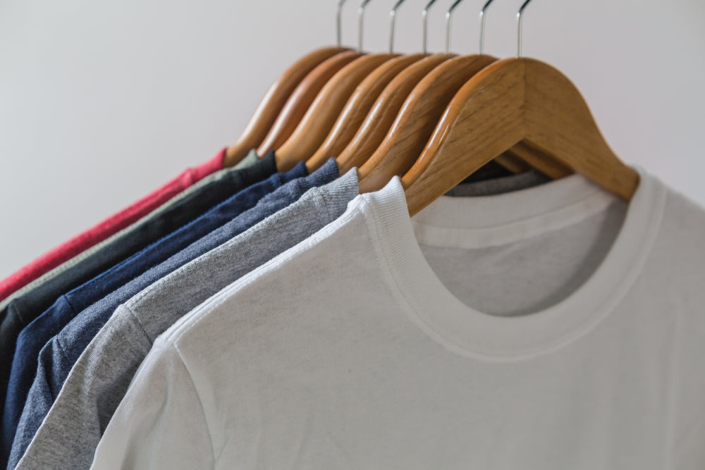

Element Clothing was a project created with some friends and I who wanted to find solutions to making reusing clothing more accessible with the dwindling sources to donate clothes to.
After the project kickoff, we defined our research strategy and objectives. Understanding the target audience and their challenges were our priority. On top of conducting interviews, we built an online survey and shared it in various relevant communities. In just a few days, we received 15 submissions. Based on these, we identified 5 common pain points, which lead us to the next step. 15 participants filled out the survey We found that people do donate or resell clothing, but most of them only donate 1-2 times a year, with 66% of them doing so. Based on this information, we decided to implement a rewards program that would encourage users to continue donating their clothes.
During the ideation phase of the project, my team conducted user interviews to build new personas and to inform the design. Together with the team, we prepared an interview script with 18 open-ended questions, focusing on our target audiences’ values, motivations, and daily routines. In 4 days, my team and I recruited and interviewed 6 users remotely. We referenced the user interview findings throughout the entire design process. For our questions, we wanted to focus on the shopping and reusing habits of our users so we can gauge how many people would be interested in using an app such as Element Clothing. We interviewed 6 people across my team. The main insights were that there are many people interested in reusing clothing, however the majority of our interviews and survey participants shared that donating or reselling their clothes is very time consuming in their busy schedules. Based on our findings, we decided to create features in Element Clothing that would encourage users to come back to the app and continue to repurpose their clothing, such as an rewards system.
Welcome to Redefining Fashion Sustainability. At Element Clothing, where we believe in the power of reimagining fashion sustainability. From casual chic to formal elegance, Element Clothing empowers you to express your unique style effortlessly while reducing your environmental footprint. Join us in our mission to combat fashion waste and promote sustainable practices within the industry. Discover the joy of mindful fashion with Element Clothing. Let's rewrite the story of fashion, one reused garment at a time.
On Element Clothing we were able to make two iterations to our prototype.